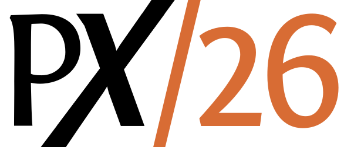

March 16 (Mon), 2026 (hybrid)
Co-located with <Programming> 2026 in Munich, Germany
Flyer (PDF) | 2026.programming-conference.org/home/px-2026 | programming-experience.org/px26
Proceedings are available from ACM DL at https://dl.acm.org/doi/proceedings/10.1145/3801119.
Some programming feels fun, other programming feels annoying. Why?
For a while now the study of programming has forced improvements to be described through the Fordist lens of usability and productivity, where the thing that matters is how much software can get built, how quickly.
But along the way, something has gone missing. What makes programmers feel the way they do when they’re programming? It’s not usually fun to spend an age doing something that could have been done easily, so efficiency and usability still matter, but they’re not the end of the story.
Some environments, activities, contexts, languages, infrastructures make programming feel alive, others feel like working in a bureaucracy. This is not purely technologically determined, writing Lisp to do your taxes probably still isn’t fun, but it’s also not technologically neutral, writing XML to produce performance art is still likely to be <bureaucratic></bureaucratic>.
Whilst we can probably mostly agree about what isn’t fun, what is remains more personal and without a space within the academy to describe it.
PX set its focus on questions like: Do programmers create text that is transformed into running behavior (the old way), or do they operate on behavior directly ("liveness"); are they exploring the live domain to understand the true nature of the requirements; are they like authors creating new worlds; does visualization matter; is the experience immediate, immersive, vivid and continuous; do fluency, literacy, and learning matter; do they build tools, meta-tools; are they creating languages to express new concepts quickly and easily; and curiously, is joy relevant to the experience?
In this 12th edition of PX, we will expand its focus to also cover the experience that programmers have. What makes it and what breaks it? For whom? What can we build to share the joy of programming with others?
Here is a list of topic areas to get you thinking:
Correctness, performance, standard tools, foundations, and text-as-program are important traditional research areas, but the experience of programming and how to improve and evolve it are the focus of this workshop. We also welcome a wide spectrum of contributions on programming experience.
Submissions are solicited for Programming Experience 2026 (PX/26). The thrust of the workshop is to explore the human experience of programming—what it feels like to program, or what it should feel like. The technical topics include exploratory programming, live programming, authoring, representation of active content, visualization, navigation, modularity mechanisms, immediacy, literacy, fluency, learning, tool building, language engineering, and theory building.
Submissions by academics, professional programmers, and non-professional programmer are welcome. Submissions can be in any form and format, including but not limited to papers, presentations, demos, videos, panels, debates, essays, writers’ workshops, and art. Presentation slots are expected to be between 20 minutes and one hour (if time allows), depending on quality, form, and relevance to the workshop.
Submissions of academic papers directed toward publication should be so marked, and the program committee will engage in peer review for all such papers.
All artifacts are to be submitted via EasyChair. Papers and essays must be written in English, provided as PDF documents, and strictly adhere to the ACM Format. If you are using LaTeX, please use ACM’s Primary Article Template. Please include page numbers in your submission for review using the LaTeX command \settopmatter{printfolios=true} (see examples in the template). If you are formatting your paper using Word, please use the proper template from the ACM site and select the sigconf style there. Please also ensure that your submission is legible when printed on a black and white printer. In particular, please check that colors remain distinct and font sizes are legible.
There is no page limit on submitted papers and essays. It is, however, the responsibility of the authors to keep the reviewers interested and motivated to read the paper. Reviewers are under no obligation to read all or even a substantial portion of a paper or essay if they do not find the initial part of it interesting.
Submissions of academic papers directed toward publication will undergo standard peer review; other submissions will be reviewed for relevance and quality; shepherding will be available.
Academic papers and essays accepted for publication will be published as part of ACM's Digital Library; video publication on Vimeo or other streaming site; other publication on the PX workshop website.
Academic papers and essays accepted for publication will appear in the ACM Digital Library (ACM DL) as part of the <Programming> 2026 Conference Companion.
Paper presentations, presentations without papers, live demonstrations, performances, videos, panel discussions, debates, writers' workshops, art galleries, dramatic readings.
We will be following a variant of the writers' workshop format used in the software patterns community. This format works well when the goals include improving the form or presentation of the ideas as well as improving or understanding the ideas themselves.
In the writers' workshop:
This is the basic format, but we adjust the flow according to the needs of the group and the way the discussion is going. It is formal to ensure all the important points are covered.
For more information about the workshop format, please have a look at Richard P. Gabriel's book "Writers' Workshops & the World of Making Things" (at dreamsongs.com, local copy).
© 2016-2026 HPI Software Architecture Group (Imprint)